Bienvenue

01
Monolithe orbitalUne ouverture très brandée : le personnage arrive au centre d’un système qui s’éveille autour de lui.
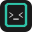
ShellDeckDouze pistes construites pour le slot panoramique 560 × 200 de l’onboarding. Le cadre octogonal, les expressions terminal et le mint deviennent une matière narrative : connexion, modes, surfaces, raccourcis et réussite.
Une ouverture très brandée : le personnage arrive au centre d’un système qui s’éveille autour de lui.
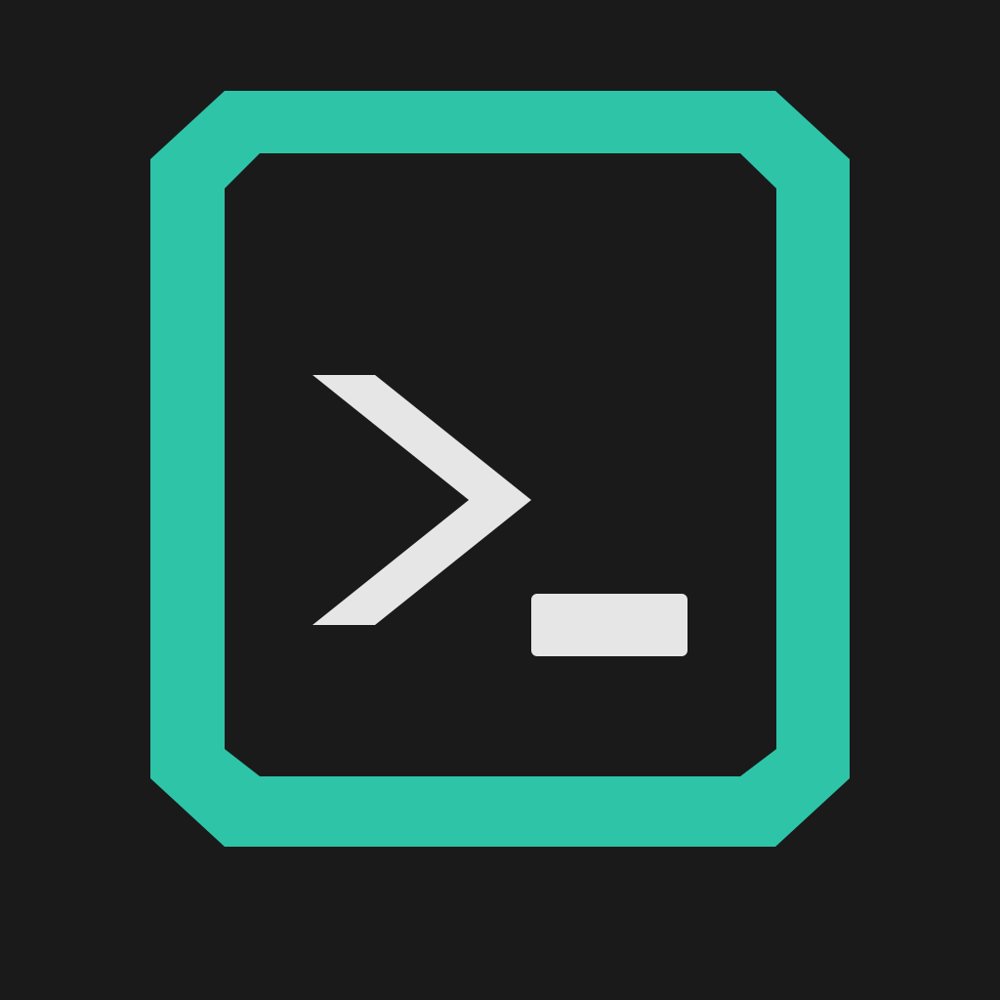
Le logo devient le nœud central qui relie cloud, serveurs, terminal et sites sans tomber dans le screenshot produit.
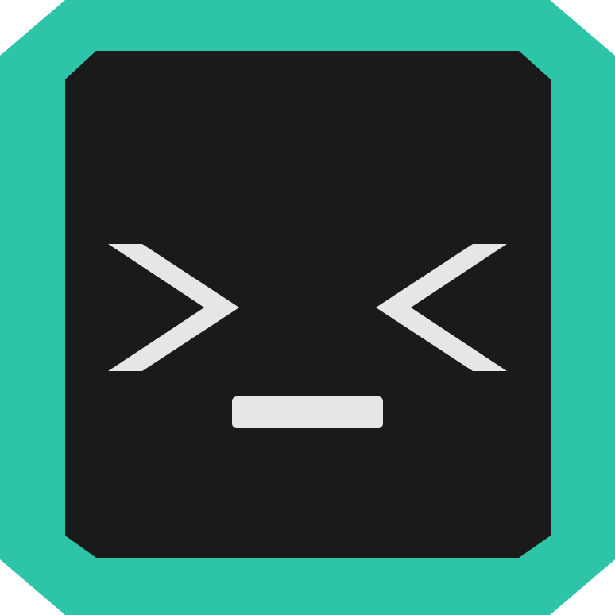
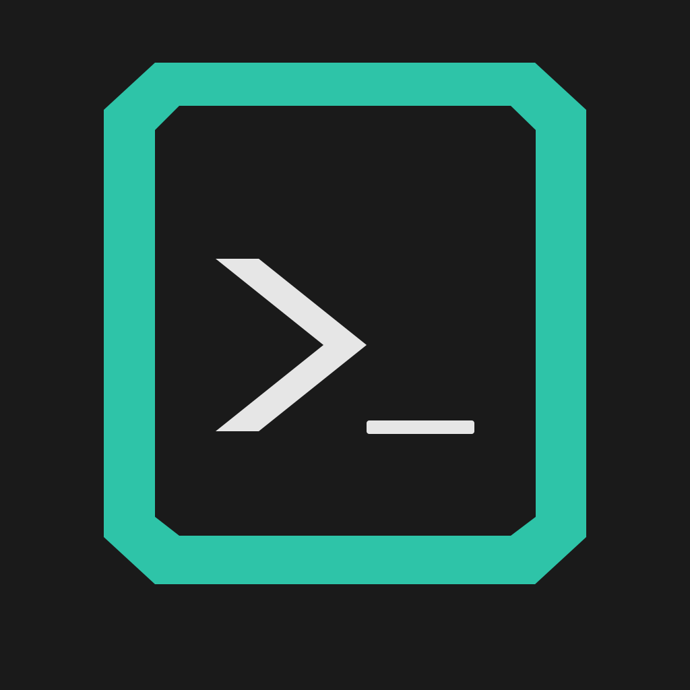
Utilisateur, Support et Dev sont incarnés par trois expressions du même système plutôt que trois interfaces miniatures.
Le cadre du monolithe matérialise le tunnel SSH : un usage fonctionnel de la forme de marque.
Sites, demandes et outils se superposent comme un deck physique. Une métaphore directe du nom ShellDeck.
La palette reste reconnaissable, mais le monolithe en débord en fait une vraie scène de marque.
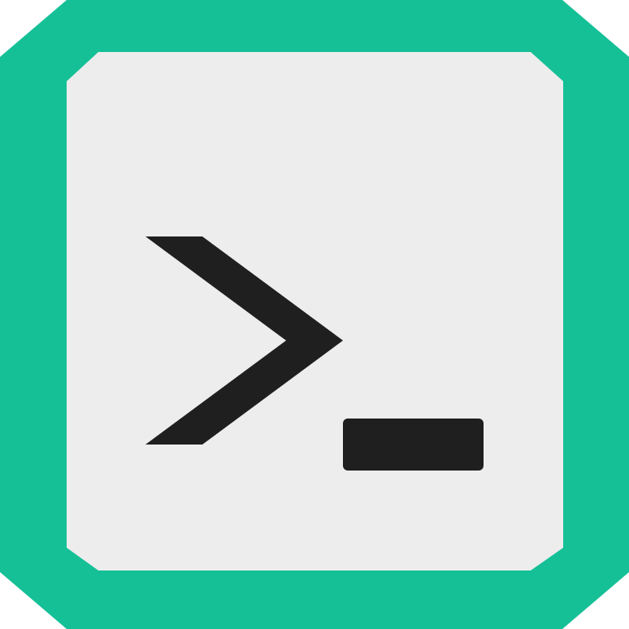
Un traitement plus tactile et lumineux pour mémoriser les raccourcis essentiels sans tutoriel dense.
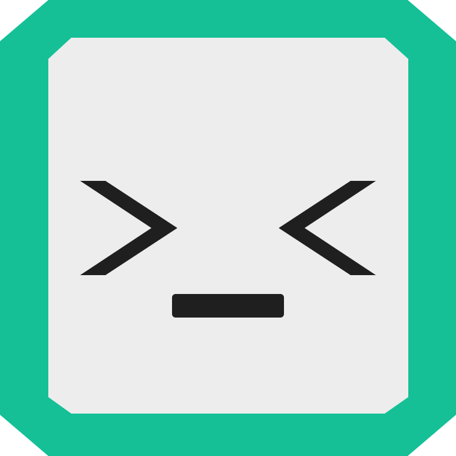
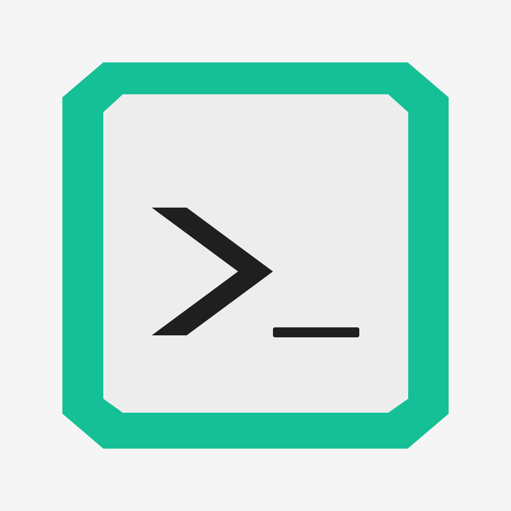
Le monolithe réagit au parcours : accueil, action, réussite. Cette piste est naturellement animable.
Le mark répété devient une texture utile pour transitions, fonds de slides et écrans d’attente.
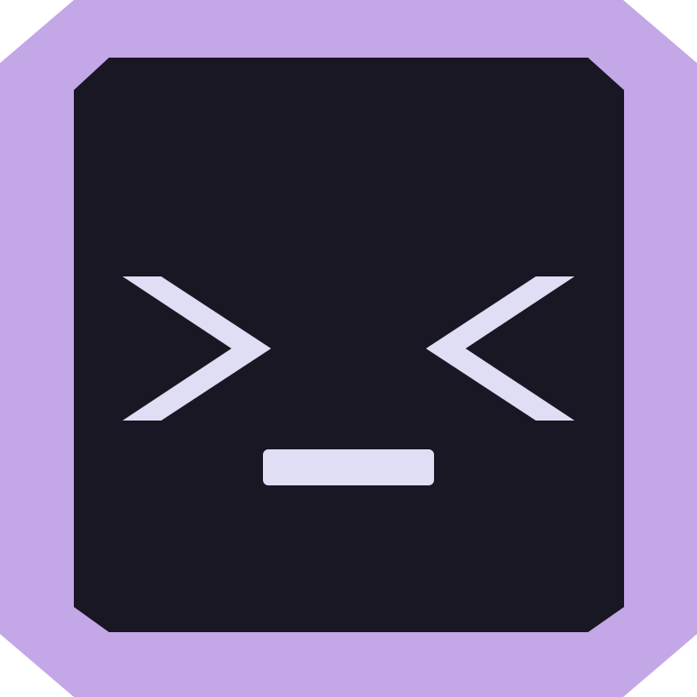
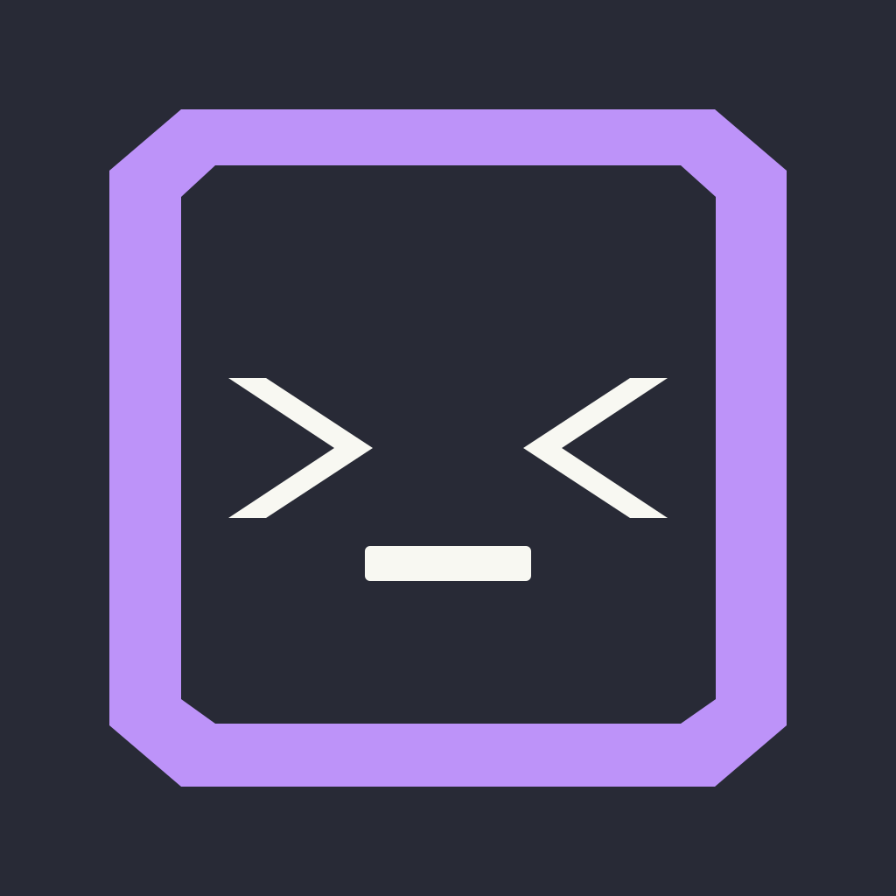
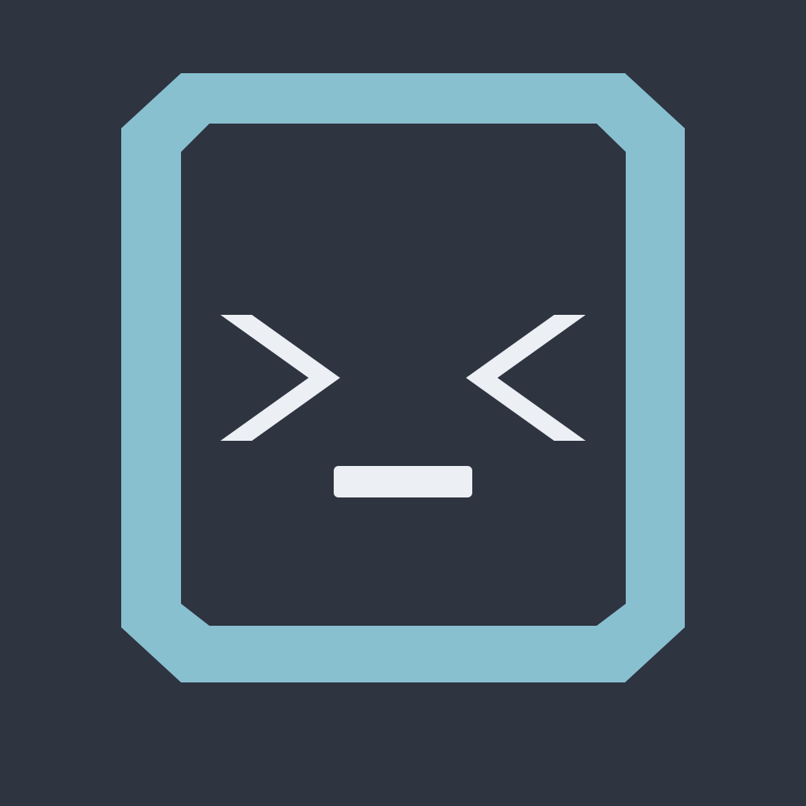
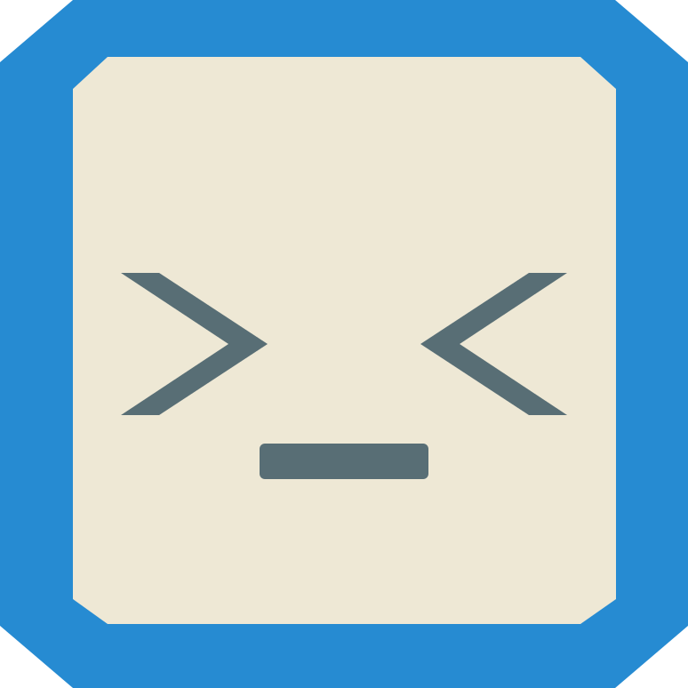
La famille de thèmes est présentée comme un spectre de personnalités, sans reproduire l’écran Réglages.
Un recadrage radical où le logo devient la composition elle-même. Fort pour la première slide.
Le wink et les fragments du cadre concluent le parcours sur une note vivante, sans confettis génériques.